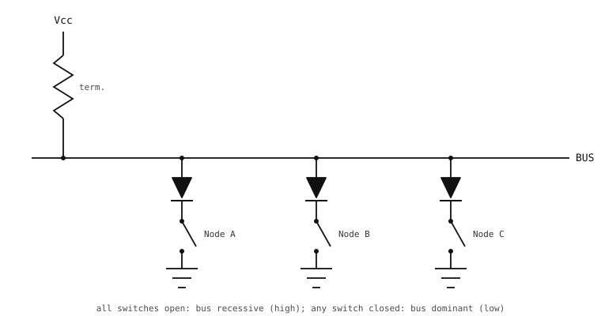

3.25. Podstawy magistrali CAN¶
CAN (Controller Area Network) został pierwotnie zaprojektowany przez firmę Bosch w latach 80. XX wieku w celu połączenia wszystkich elektronicznych jednostek sterujących w samochodzie na jednej, krótkiej, współdzielonej magistrali. Wciąż dominuje w wiązkach przewodów samochodowych, ale ta sama odporność, działanie w czasie rzeczywistym i architektura multi-master sprawiają, że jest to domyślna magistrala obiektowa w automatyce, robotyce oraz urządzeniach rolniczych i przemysłowych każdego rodzaju.
CAN nie ma jednego „kontrolera” i zestawu „urządzeń peryferyjnych” w taki sposób jak SPI i I2C. Każdy węzeł na magistrali jest równorzędny i dowolny węzeł może nadawać, gdy tylko magistrala jest bezczynna. To, co pozwala temu się skalować, to architektura rozgłaszania z arbitrażem.
3.25.1. Rozgłaszanie z arbitrażem priorytetowym¶
Każda wiadomość na magistrali CAN niesie ze sobą identyfikator – 11 bitów dla klasycznej ramki standardowej, 29 bitów dla wariantu rozszerzonego. Identyfikator nie jest adresem; oznacza on, czego dotyczy wiadomość (obroty silnika, położenie pedału hamulca, napięcie akumulatora itd.). Gdy węzeł chce wysłać wartość, rozgłasza ją oznaczoną odpowiednim identyfikatorem, a każdy węzeł na magistrali widzi tę transmisję. Każdy odbiornik filtruje magistralę sprzętowo, aby wybrać tylko te identyfikatory, które go interesują.
Jeśli dwa węzły próbują nadawać w tym samym czasie, konstrukcja elektryczna magistrali pozwala wygrać wiadomości o niższym numerycznie identyfikatorze bez utraty jakichkolwiek bitów.
Sztuczka polega na dwóch stanach elektrycznych magistrali: dominującym (logicznie 0) i recesywnym (logicznie 1). Przewody CAN są utrzymywane w stanie wysokim (recesywnym) przez rezystory terminujące, gdy żaden węzeł nie nadaje; dowolny węzeł może ściągnąć przewody w dół (do stanu dominującego), wymuszając przepływ prądu przez swój nadajnik-odbiornik. Rezultatem jest wired-AND: jeśli choćby jeden węzeł wymusza na magistrali stan dominujący, linia odczytuje stan dominujący, a stan recesywny odczytuje tylko wtedy, gdy każdy węzeł ją zwolni. Stan dominujący zawsze wygrywa. (Niektóre źródła nazywają ten sam układ wired-OR, traktując „dominujący” jako sygnał aktywny, a nie iloczyn AND bitów recesywnych – zachowanie fizyczne jest w obu przypadkach identyczne.)

Koncepcyjna postać wired-AND. Prawdziwy CAN realizuje tę samą logikę na parze różnicowej (CAN_H / CAN_L), z nadajnikami-odbiornikami i rezystorami terminującymi rozłożonymi na oba przewody, ale reguła na magistrali jest taka sama: dowolny węzeł może wymusić stan dominujący, a stan recesywny odczytuje się tylko wtedy, gdy każdy węzeł ją zwolni.¶
Arbitraż wykorzystuje tę asymetrię bezpośrednio. Każdy nadający węzeł wysyła swój identyfikator bit po bicie, począwszy od MSB, i obserwuje magistralę w trakcie nadawania. Węzeł, który umieszcza na przewodzie bit recesywny, ale odczytuje z powrotem bit dominujący, wie, że inny węzeł o niższym identyfikatorze nadaje w tym samym momencie i wygrał tę pozycję bitu. Natychmiast przestaje wymuszać stan na magistrali i nasłuchuje. Tymczasem zwycięski węzeł widzi, że jego własne bity wychodzą niezmienione – z jego punktu widzenia nie wydarzyło się nic niezwykłego. Identyfikator o niższym numerze wygrywa, ponieważ jego bity dominujące nadpisują bity recesywne, które identyfikatory o wyższych numerach wysłałyby na tych samych pozycjach.
Przegrany czeka następnie, aż magistrala stanie się bezczynna, i ponawia próbę automatycznie. Nie ma kolizji ani utraconych wiadomości – jedynie deterministyczne porządkowanie według priorytetów.
To właśnie styl publish/subscribe sprawia, że CAN działa na dużą skalę: każdy może nadawać, każdy może nasłuchiwać, a identyfikatory sprawiają, że rozsyłanie jest niejawne.
3.25.2. Magistrala fizyczna¶
Kontroler CAN w mikrokontrolerze nie steruje magistralą bezpośrednio. Udostępnia tylko dwa piny CMOS 3,3 V – TX (bit, który chce wysłać) i RX (bit, który widzi na magistrali) – a te piny prowadzą do osobnego układu zwanego nadajnikiem-odbiornikiem CAN lub PHY. Nadajnik-odbiornik znajduje się pomiędzy kontrolerem a właściwymi przewodami CAN; to on wie, jak komunikować się z magistralą.
Sama magistrala to para różnicowa 5 V:
CAN_H – „wysoki” przewód pary.
CAN_L – „niski” przewód.
W stanie recesywnym oba przewody znajdują się na poziomie około 2,5 V (punkt środkowy zasilania 5 V magistrali). W stanie dominującym nadajnik-odbiornik podnosi CAN_H do około 3,5 V, a CAN_L obniża do około 1,5 V, wytwarzając różnicę około 2 V w poprzek pary. Odbiorniki próbkują różnicę między dwoma przewodami, co czyni sygnał odpornym na zakłócenia wspólne wychwytywane na długich odcinkach kabla.
Dwukierunkowe zadanie nadajnika-odbiornika:
Po stronie TX odczytuje on niesymetryczny pin TX 3,3 V kontrolera i albo rozsuwa CAN_H i CAN_L dla stanu dominującego, albo zwalnia oba dla stanu recesywnego.
Po stronie RX odczytuje on różnicową parę CAN_H / CAN_L i raportuje niesymetryczny poziom 3,3 V na swoim pinie RX z powrotem do kontrolera.
Dwa rezystory terminujące 120 omów, po jednym na każdym fizycznym końcu kabla, utrzymują magistralę w recesywnym punkcie środkowym, gdy żaden węzeł nie nadaje, oraz tłumią odbicia, które w przeciwnym razie zakłóciłyby sygnał różnicowy na długich odcinkach.
3.25.3. Ramka danych¶
Standardowa ramka danych CAN wygląda na przewodzie tak:

Standardowa ramka danych CAN: pola SOF, ID, RTR, kontrola, dane, CRC, ACK i EOF.¶
Każde pole ma określone zadanie:
SOF (start of frame). Jeden bit dominujący, który sygnalizuje, że rozpoczyna się nowa ramka, i synchronizuje zegar bitowy każdego węzła.
ID (identyfikator). 11-bitowy identyfikator, na którym magistrala przeprowadza arbitraż. Niższy numer = wyższy priorytet.
RTR (remote transmission request). Ustawiany przy żądaniu danych, a nie przy dostarczaniu danych; odbiorniki o pasującym identyfikatorze odpowiadają, wysyłając dane samodzielnie.
Kontrola. 6-bitowe pole kodujące długość danych (
DLC) oraz kilka bitów porządkowych.Dane. Od 0 do 8 bajtów ładunku użytecznego (CAN Classic; CAN FD rozszerza to do 64 bajtów).
CRC. Łącznie 16 bitów: 15-bitowy CRC obliczony na poprzedzających polach plus 1-bitowy ogranicznik CRC.
ACK. Łącznie 2 bity. W pierwszym bicie – szczelinie ACK – nadajnik zwalnia linię, a każdy węzeł, który poprawnie odebrał ramkę, ściąga ją w dół; drugi bit jest recesywnym ogranicznikiem. Brak ACK informuje nadajnik, że żaden węzeł nie usłyszał ramki i powinien spróbować ponownie.
EOF (end of frame). Siedem bitów recesywnych zamykających ramkę.
Wszystko to jest generowane i dekodowane przez kontroler CAN sprzętowo; oprogramowanie widzi tylko identyfikator, dane i kilka flag.
3.25.4. Gdzie plasuje się CAN¶
Wybory projektowe CAN wyznaczają jego niszę:
Odporny. Sygnalizacja różnicowa na skrętce, wbudowane wykrywanie błędów, deterministyczny arbitraż priorytetowy i automatyczne ponawianie sprawiają, że CAN przetrwa w elektrycznie zaszumionych środowiskach, w których UART i SPI uszkodziłyby dane.
Multi-master. Dowolny węzeł może nadawać w dowolnym momencie. Nie jest wymagany żaden centralny kontroler i żaden węzeł nie stanowi pojedynczego punktu awarii.
Ograniczone pasmo. Klasyczny CAN osiąga maksymalnie około
1 Mbit/s; CAN FD rozszerza ten zakres. CAN jest właściwym wyborem, gdy łącze przebiega pomiędzy płytkami lub modułami, często na przestrzeni metrów kabla, a priorytetem jest niezawodność.Protokoły wyższych warstw. Sama magistrala CAN nie mówi, co oznacza identyfikator ani jak podzielić długą wiadomość na fragmenty. Protokoły warstwy aplikacji – CANopen, J1939, ISO-TP/UDS, NMEA 2000 – nakładają te reguły na wierzchu. Osobnym elementem wartym poznania jest plik DBC: specyficzny dla producenta format tekstowy, który zapisuje, które identyfikatory niosą które sygnały na poziomie bitów w danym pojeździe lub systemie. Pliki DBC to format metadanych opisujący układ wiadomości jednej magistrali, a nie odrębny protokół.
Sterownik w Magistrala CAN w kodzie obsługuje ramkę CAN na poziomie przewodu; mapowanie identyfikatorów na znaczenia jest zadaniem aplikacji.